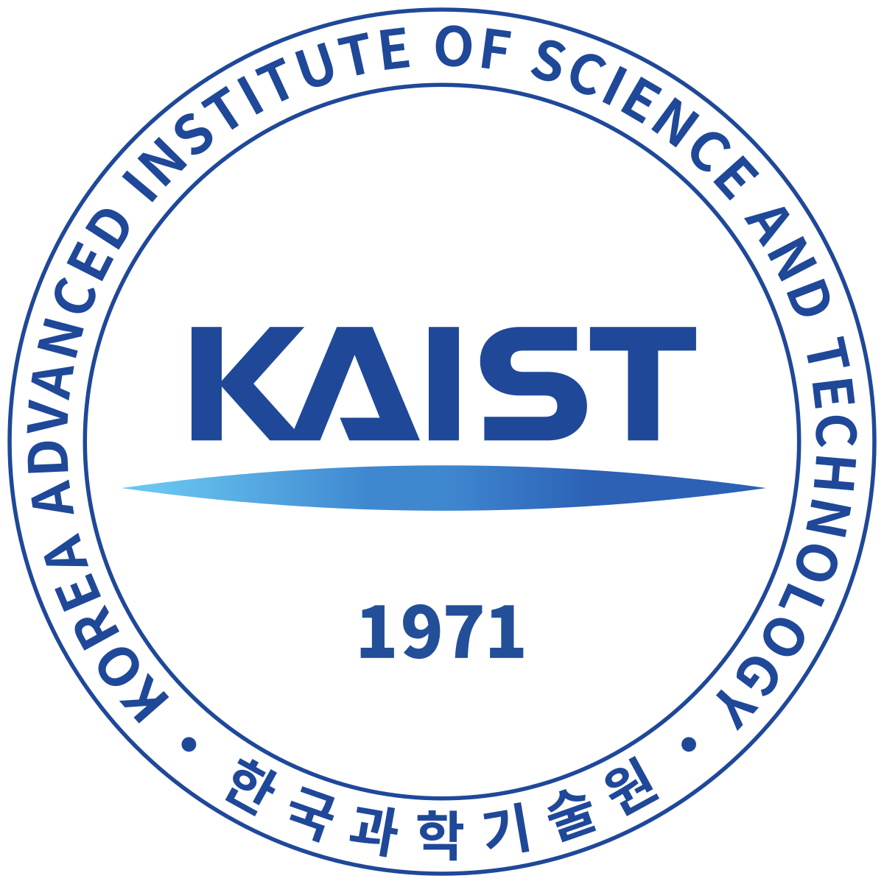

인삿말
안녕하세요! 저는 김시현입니다. 20살이고, 카이스트 생명과학과에 다니고 있습니다. 현재 복수 전공을 결정하기 위해 다양한 경험을 쌓고자 이번 직무캠프에 참여하게 되었습니다.

좋아하는 것
제가 좋아하는 것은 게임과 친구들과의 술자리입니다. 게임을 하면서 스트레스를 풀거나 친구들과 술을 마시며 서로의 이야기를 듣는 것이 저의 스트레스를 풀 수 있는 시간입니다.
목표
저의 목표는 대기업에 입사하는 것입니다. 아직 어떤 회사를 목표로 할지 정한 것은 아니지만 좋은 직장을 구하기 위해 공부도 열심히 하고 다양한 경험을 할 수 있도록 노력하고 있습니다.